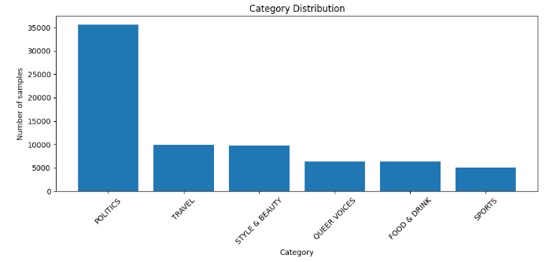

Filtering & setup
- Removed low-similarity / tiny categories (kept 42 classes).
- Final vocabulary: 33,464 tokens.
- Stopwords retained for model-aware tokenizers; ratio ~35%.
- Max sequence length: 60 tokens (covers >99%).
Filter long-tail categories, normalize text, tokenize to max length 60, and build stratified splits with batch size 32 for downstream models.
../../../assets/text/.
Stratified to keep the original imbalance pattern.
| Split | Ratio | Approx. samples |
|---|---|---|
| Train | 70% | ≈146.7k |
| Validation | 15% | ≈31.4k |
| Test | 15% | ≈31.4k |
Stratified by category; seed fixed for reproducibility.
Normalize text then tokenize to a max length of 60 tokens.

Batching, workers, padding, and bucketing choices per model family.
| Model | Batch size | Workers | Bucketed | Padding | Notes |
|---|---|---|---|---|---|
| RNN / LSTM / BiLSTM | 32 | 0 | No | Pad to max_len=60 (post-padding) | Static length for efficiency. |
| Transformer (DistilBERT) | 16 | 0 | No | Tokenizer padding=True, max_length=128 | Notebook uses one loader for train+val (no separate val loader). |